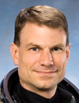

Lyndon B. Johnson Space Center
Houston, Texas 77058
|
National Aeronautics and Space Administration Lyndon B. Johnson Space Center Houston, Texas 77058 |
 |
Biographical Data |
||
Stanley G. Love (Ph.D.)
NASA Astronaut
PERSONAL DATA: Born June 8, 1965, in San Diego, California, but considers Eugene, Oregon, to be his hometown. He is married with two children. His recreational interests include martial arts, alpine hiking, reading and writing science fiction and appreciation of new music, cult films and anime. His parents, Glen A. and Rhoda M. Love, reside in Oregon.
EDUCATION: Graduated from Winston Churchill High School, Eugene, Oregon, 1983. Earned a Bachelor of Science degree in Physics from Harvey Mudd College in Claremont, California, 1987. Studied Astronomy at the University of Washington in Seattle, receiving a Master of Science degree in 1989 and a Doctor of Philosophy degree in 1993.
ORGANIZATIONS: Association of Space Explorers; American Astronomical Society; Division for Planetary Science; American Geophysical Union; American Institute of Aeronautics and Astronautics (Associate Fellow); Meteoritical Society; Harvey Mudd College Alumni Association.
AWARDS: National Merit and Oregon State (Sigma Chi) Scholar (1983 to 1984); Dean’s List Distinction, Harvey Mudd College (1985, 1986, 1987); O.K. Earl Prize Postdoctoral Fellowship, California Institute of Technology (1995); NOVA Award, Jet Propulsion Laboratory (1998); Lyndon B. Johnson Space Center Group Achievement Award (Expedition 6 Spacewalk Team, 2003); NASA Space Flight Awareness Team Award (ISS Testbed for Analog Research Team (2013); Orbital Space Plane Team (2004); United States Antarctica Service Medal (2006); Orion Phase 2 Source Evaluation Team (2007); NASA Space Flight Medal (STS-122, 2008); Lyndon B. Johnson Space Center Certificate of Appreciation (International Space Station Six-Person Crew Effort, 2009); Lyndon B. Johnson Space Center Individual Performance Awards (2003, 2004, 2006, 2008, 2009, 2010, 2011, 2012); STS-128/ISS-17A Capsule Communicator (CAPCOM) Team (2009); Leader, STS-131/ISS-19A CAPCOM Team (2011); NASA Extreme Environment Mission Operations (NEEMO) 16 Mission Operations Team (2012); NASA Group Achievement Awards (STS-134/ISS-ULF-6) CAPCOM Team (2012).
EXPERIENCE: Love worked summers at the University of Oregon in Eugene as a computer programming instructor (1984) and as an assistant in physics and chemistry laboratories (1985 to 1987). As a graduate teaching assistant at the University of Washington in Seattle, beginning in 1987, he taught undergraduate courses in general and planetary astronomy. He worked as a graduate research assistant at the University of Washington, 1989 to 1993, on a variety of projects including space propulsion and energy storage, stellar photometry and spectroscopy, analysis of space-exposed surfaces, hypervelocity impact and particle capture, atmospheric entry heating of micrometeoroids, infrared imaging of the zodiacal light and electron microscopy of interplanetary dust particles. Love moved to the University of Hawaii in Honolulu in 1994 for postdoctoral research on the formation of meteoritic chondrules, the collisional evolution of asteroids and the possibility of meteorites from the planet Mercury. Love was awarded a prize postdoctoral fellowship at the California Institute of Technology in 1995. His work there included computational fluid dynamic simulations of asteroid collisions, calibration of the Cassini spacecraft's dust-particle impact detector and experimental shock compression of the mineral calcite. Love transferred to the Jet Propulsion Laboratory as a staff engineer in 1997 to work on computer models and simulations of spacecraft optical instrument systems and to participate in a laboratory-wide process re-engineering effort.
NASA EXPERIENCE: Selected by NASA as an astronaut in June 1998, Love reported for training in August 1998. Basic astronaut candidate training included orientation briefings and tours; scientific and technical classes; instruction in space shuttle and International Space Station systems and physiological training, ground school, and water and wilderness survival instruction to prepare for T-38 flight training.
After completion of the basic syllabus, Love received advanced astronaut training, including spacewalk classes and suited underwater practice sessions in the Neutral Buoyancy Laboratory (NBL), coursework and extensive simulator training to operate the shuttle and station robotic arms, instruction and qualification as a copilot for the rendezvous and docking of the shuttle with another orbiting spacecraft and wilderness and cold-weather leadership and survival training in Alaska, Utah and Canada. In his first technical assignment (1999), Love served the Astronaut Office as a representative to the Environmental Control and Life Support Systems engineering group, preparing for the first crews aboard the International Space Station. That work led to an appointment (2000) as a Capsule Communicator (CAPCOM) in the Mission Control Center for station Expeditions 1 to 7 and for shuttle missions STS-104 (ISS-7A), STS-108 (ISS-UF-1) and STS-112 (ISS-9A). Following the Columbia accident (2003), Love served in the Astronaut Office’s Exploration branch, where he participated in the Orbital Space Plane Expendable Launch Vehicle Human Flight Safety Certification Study, helped develop requirements for future human-rated launch systems, including the Ares I, investigated the polar environment as an analog for future space missions as a member of the 2004-2005 and 2012-2013 Antarctic Search for Meteorites (ANSMET) expeditions and served on the Source Evaluation Board for the pivotal Orion Phase 2 contract. In 2004, Love and fellow astronaut, Ed Lu, co-invented the gravity tractor, a novel method to controllably modify the orbits of hazardous asteroids. After STS-122, Love served as Crew Support astronaut for the space station Expedition 18 crew and resumed duty as CAPCOM for station Expeditions 17, 18 and 22 to 26 and for shuttle missions STS-127/ISS-2JA, STS-128/ISS-17A, STS-129/ISS-ULF3, STS-131/ISS-19A, STS-132/ISS-ULF4, STS-133/ISS-ULF5, STS-134/ISS-ULF6, and STS-135/ISS-ULF7 (the final shuttle flight). After leaving active flight status in 2010, Love served as a rover crew member in the Desert Research and Technology Studies simulated lunar surface mission in the Arizona desert and piloted DeepWorker submersibles for the Pavilion Lake Research Project in British Columbia. In 2011, he served as crew office representative to the Space Launch System program team and participated in efforts to human-rate the Atlas V rocket. He reprised his role as sub-pilot for the 16th NASA Extreme Environment Mission Operations (NEEMO) test, which was located off Key Largo, Florida, in 2012. Love worked on a rotational assignment in NASA’s Johnson Space Center's Human Exploration Development Support Directorate in 2012 and 2013, serving as a crew representative for space flight analogs and the development of future deep space exploration missions. He returned to the Astronaut Office in 2014, where he is again serving as a crew representative for the Space Launch System (SLS) and continuing to help plan for human exploration of asteroids, the moon, and Mars.
SPACEFLIGHT EXPERIENCE: In 2008, Love completed his first spaceflight on the crew of STS-122, logging more than 306 hours in space, including more than 15 hours in two spacewalks. STS-122 Atlantis (February 7 through February 20, 2008) was the 24th shuttle mission to visit the International Space Station. The primary objective of the flight was to carry the European Space Agency’s Columbus laboratory module to the space station and install it there permanently. Love performed two spacewalks to help prepare the Columbus laboratory for installation, to add two science payloads to the outside of Columbus and to carry a failed ISS gyroscope to the shuttle for return to Earth. Love's flight duties also included operation of both the station and shuttle robotic arms. STS-122 was a crew replacement mission, delivering Expedition16 flight engineer, European Space Agency astronaut Léopold Eyharts, and returning home with Expedition16 flight engineer, NASA astronaut Daniel Tani. The STS-122 mission was accomplished in 12 days, 18 hours, 21 minutes and 40 seconds and traveled 5,296,832 statute miles in 203 Earth orbits.
JULY 2014